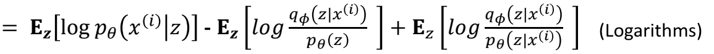
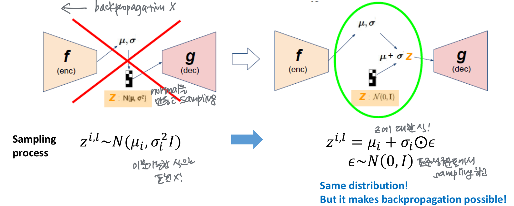

VAE 이해해보기
이 글은 VAE 논문(Auto-Encoding Variational Bayes)을 리뷰하다가 막혀서 오토인코더의 모든 것, 딥러닝 VAE 를 참고해서 VAE를 이해 + 수식적인 부분 정리를 목적으로 쓴 글입니다.
0. Background
AE vs VAE?
통계와 수학으로 가득한 내용에 걸맞게 논문의 제목이 Auto-Encoding Variational Bayes인 것과 달리, 우리에게 흔히 알려져 있는 이름은 VAE(variational autoencoder)이다. 그렇다면 이 논문은 autoencoder와는 어떤 관계에 있는 것일까?
AE의 구조
{kind=link}
Autoencoder는 인코더-디코더로 이루어진 네트워크이다. 입출력이 동일한 네트워크로, 인코더는 앞단에서 original data를 input으로 받아 z 차원의 latent를 output으로 뱉고, 디코더는 뒷단에서 latent를 input으로 받아 다시 original data와 같은 차원의 output을 출력한다. 학습은 deep neural network 방식으로, 인코더가 입력으로 받은 original data와 디코더가 출력한 같은 차원의 output data 사이의 reconstruction error(mse나 cross-entropy)를 loss로 삼아 이루어진다.
AE의 의의
Autoencoder는 크게 1. 차원 축소(+manifold learning) 2. 생성 모델 의 역할을 한다. 인코더는 input을 z차원으로 축소하고(latent라고 부른다), 디코더는 z차원으로 축소된 latent를 다시 원래의 차원으로 복원한다. Autoencoder가 잘 학습되었다면, 인코더와 디코더를 분리했을 때 미지의 새로운 데이터에 대해서도 각각 latent와 reconstructed input을 출력할 것이다. 따라서 인코더는 데이터의 특성을 잘 학습하여 새로운 차원으로 embedding 시켜주는 차원 축소 그리고 manifold learning의 역할을, 디코더는 미지의 잠재 벡터에 대해 새로운 output을 출력하는 생성모델의 역할을 한다.
그리고 이 모든 과정이 정답 데이터 없이 학습되는 unsupervised learning이라는 점도 중요한 특징이다.
AE의 한계
Autoencoder에서 input과 디코더에 의해 reconstruct 된 input 간의 loss를 가지고 네트워크를 학습하는 과정은 maximum likelihood 과정의 최적화와 같기 때문에, original data의 확률 분포를 학습하는 과정이라고 볼 수 있다. 그러나 위와 같은 단순한 mse, cross-entropy loss를 사용하면 인코더가 original data에 대한 차원 축소나 복원은 잘 수행할 수 있어도, 미지의 데이터에 대해서는 학습한 바가 없어 제대로 생성할 수 없다는 한계가 있다.
VAE
{kind=link}
따라서 output data의 확률 분포에 대한 가정을 바탕으로 디코더의 생성 모델 역할에 초점을 맞춘 것이 VAE라고 볼 수 있다. 이 inference 과정에 대한 알고리즘이 Auto-Encoding Variational Bayes이고, 이 알고리즘을 Autoencoder구조의 neural network로 만든 모델이 VAE이다.
1. Introduction
이 논문은 정말 어렵다.. background를 저렇게 장황하게 썼는데도 introduction 첫 줄부터 무슨 말인지 이해할 수 없다..
{kind=link}
efficient inference and learning in directed probabilistic models ← 이 말은 그냥 모델에서 encoder로 inference, decoder로 generate 한다는 뜻이다. latent variable은 z를 의미하고, prior probability는 θ를 parameter로 갖는 p(z), conditional probability는 z가 주어졌을 때 x의 확률분포이므로 p(x|z), posterior probablity는 p(z|x)이다. posterior probablity인 p(z|x)가 intractable하기 때문에, φ를 parameter로 갖는 q(z|x)로 approximate한다.
{kind=link}
이것을 통해 최종적으로 알고 싶은 것은 training data의 확률분포인 p(x)이다. p(x)가 maximize하는 likelihood이기 때문이다. 위의 식에서 $pθ(z|x)$ 이 intractable 할 때 p(x)를 어떻게 구하냐는 것이 이 논문이 introduction에서 제시하는 질문이고, 논문은 pθ(z|x)를 variational Bayesian approach를 통해 다른 parameter의 확률분포( $qφ(z|x)$ ) 근사함으로써 해결하고자 한다.
2. Method
(log) data likelihood log p(x)를 구하는 과정을 따라가 보자.
{kind=link}
xi는 데이터 포인트이고, 좌변이 maximize하고자 하는 log likelihood이다. p(x)와 z가 independent하므로 z에 대해 평균을 구해도 같다.(z가 갑자기 튀어나온 거 같아 이해는 안 되지만, 나중에 z를 쓰기 위함인가보다)
{kind=link}
베이즈 정리에 의해 p(x)=p(x|z)p(z)/(pz|x)이다. (아는 게 나와서 기쁘다 ㅠㅠ)
{kind=link}
로그를 나중에 찢어줄 것이기 때문에, 우변과 좌변에 같은 확률을 곱해준다
{kind=link}
잘 찢어줬다!
{kind=link}
갑자기 DkL이라는 게 나왔찌만, 할 수 있다.
D() 부분은 분포간의 KL Divergence를 구하는 부분이다. KL Divergence는 분포끼리의 차이를 구하는 방법이라고 생각하면 된다.
{kind=link}
두 분포간의 KL divergence는 위의 식처럼 구할 수 있기 때문에, log 부분이 D()의 내용으로 바뀐 것이다.
{kind=link}
하지만 마지막 kl divergence는 위에서 설명했듯이 p(z|x)가 intractable하기 때문에 구할 수 없다. KL divergence는 항상 0보다 크거나 같기 때문에, 뒤의 term을 무시하고 앞의 부분만 최종 loss로 활용하여 optimize한다.
{kind=link}
따라서 log likelihood는 optimize할 수 있는 loss보다 크거나 같기 때문에, 이 loss를 Variational lower bound, 줄여서 “ELBO”라고 부른다.
ELBO는 maximize하려는 term이기 때문에(log likelihood에서 왔으니까) -를 붙여서 minimize하는 방향으로 써주고 모든 data point xi에 대해 sum하면,

이 되는데, 두 term에 대한 intuition이 가능하다. 좌측은 autoencoder에서 봤듯이, original input과 reconstructed input 사이의 복원 오차이고, 좌측은 prior z와 q(z|x) 사이의 KL divergence로 두 분포가 유사해야 한다는 제약 조건을 주는 regularization term이다.
optimization
loss를 optimize해보자!
- Reconstruction error
{kind=link}
Reconstruction error부터 정리해보면, (드디어 z로 평균을 구한 걸 써먹는다)
{kind=link}
z가 continuous하므로 평균을 모든 z에 대해 적분해 구한다. 하지만 모든 z에 대해 적분하는 것은 불가능하기 때문에, 몇 개의 z만 sampling하는 monte-carlo tecqnique를 사용한다.
{kind=link}
Monte-carlo tecqnique은 전체 개수가 많을 때, 표본으로 몇 개를 sampling하여 값을 얻으면 전체에서 구한 것과 비슷해진다는 내용이다. 우리의 경우는 평균을 구하기 위해 모든 z를 보지 않고 몇 개만 sampling한다고 생각하면 된다. 위의 식은 L개를 sampling하여 평균을 구한 것인데, 논문에 따르면 L=1로 1개만 sampling 해도 좋은 결과를 얻을 수 있다고 한다(사실 읭?스럽지만 넘어갔다..) 딥러닝에서 시간도 중요하기 때문에 이런 방향으로 논지를 펼친 것 같다.
$let z ∼ p(z|x) = N (µ, σ2 ).$
optimization을 최대한 쉽게 하기 위해, 논문에서는 prior z의 분포를 최대한 간단하게 정규분포로 설정했다. (이것도 이래도 되나 싶지만 논문에서 괜찮다고 했으니까 넘어가자)
하지만 sampling process를 backpropagation 할 수가 없어 사용한 것이 reparameterization trick이다.
{kind=link}
표준 정규분포를 이용하는 방식이다. 이렇게 하면 back propagation이 가능한 게, sampling을 하는 것이 아니라 encoder로 얻은 $µ, σ$ 에 random하게 얻은 표준편차를 곱해주는 식으로 표현이 된다.
- Regularization error
또 가정을 한다.. 이렇게 가정이 많은데 이 모델이 잘 학습하는 게 신기하지만 이렇게 가정하고 나면 KL divergence는 쉽게 구할 수 있다.
{kind=link}
VAE loss optimization 끝!